About imaginaryShort
imaginaryShortでは人間とテクノロジーの新たな関わり方をデザインし提案しています。
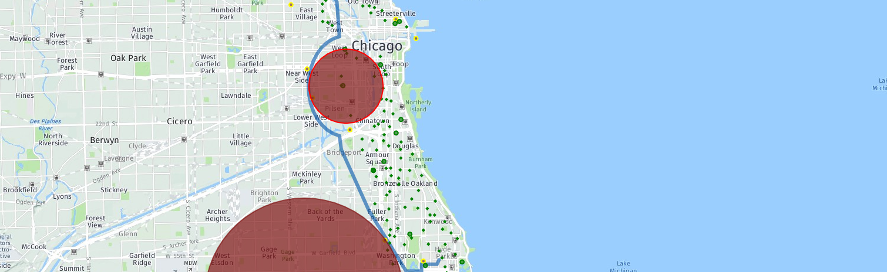
SkyLane(2018)
規制に対応したドローン飛行ルートの生成

imaginaryShort workshops(2015-2017)
imaginaryShortのテクノロジーを学ぶ2日間
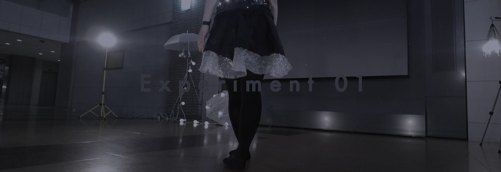
modern jazzballet x imaginaryShort (2017)
ダンスを魅力的に見せるには？を検証する
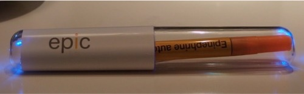
Epic(2016)
アナフィラキシーからアレルギー患者を守るためのシステム
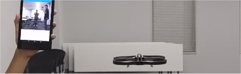
Drofie(2016)
観光地に設置された無人撮影機を使って、 二人の新しい自撮りを撮影するためのサービス
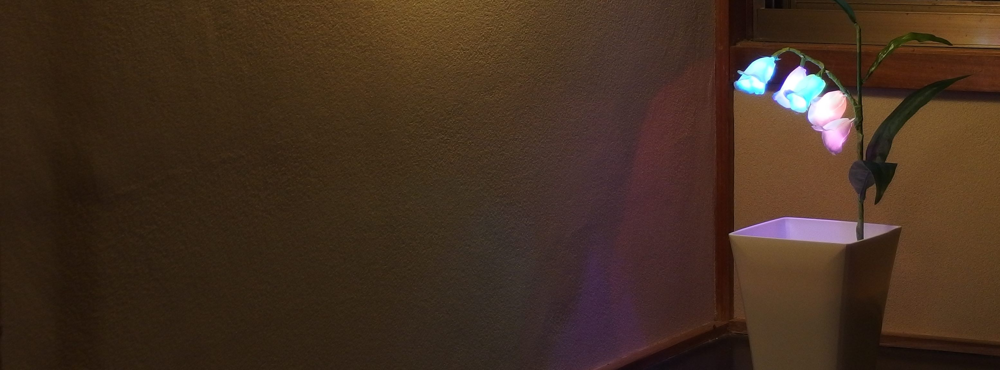
Suimokusei (2015)
ほんのりつながるスズラン型デバイス
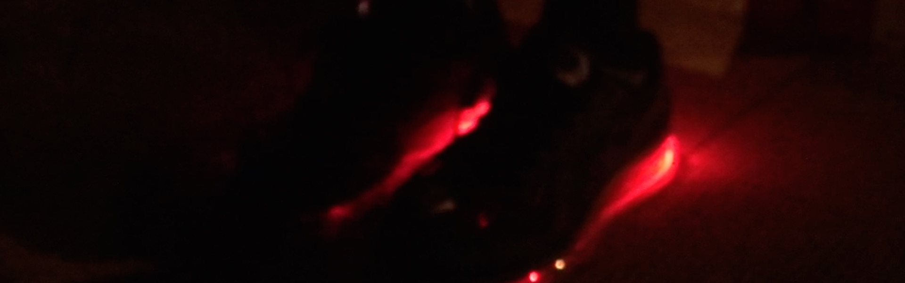
illumicate Shoes (2014)
光って通信する靴
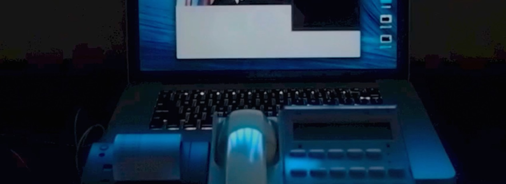
Facial Emoticon Printer (2014)
表情のプリンター
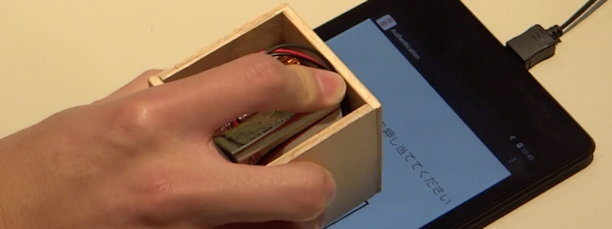
Digital Insho (2014)
タブレットPCのための印鑑
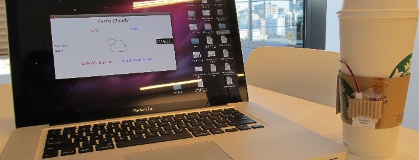
DailySleeve (2013)
新しい生活のスイッチ
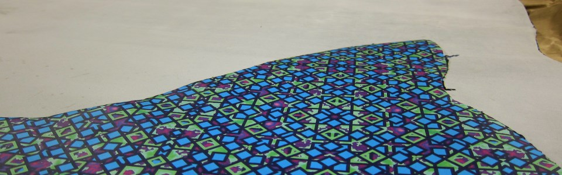
Geometric Print Leather (2014)
オリジナリティを探索する
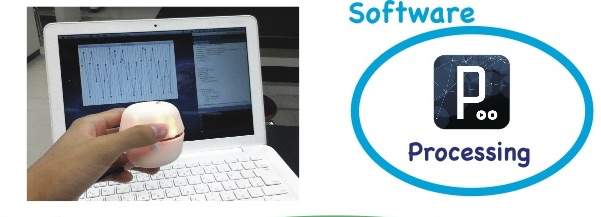
Interaction Ball (2011)
デジタルデータを可視化、可触化する
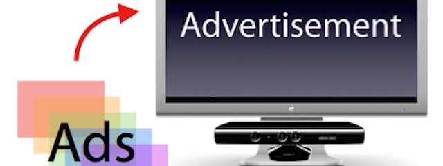
Kinect Ad System(2011)
ターゲットに合わせた広告を瞬時に表示
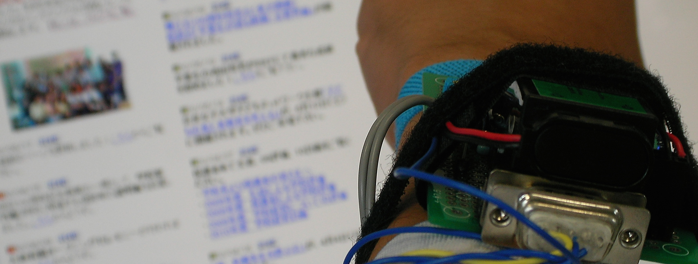
Surface Electromyography(2010)
手を握るだけのインタフェース
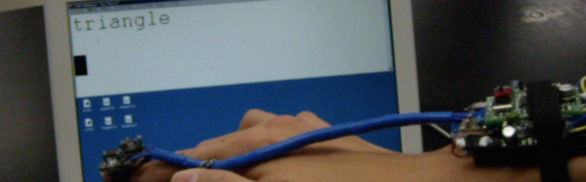
Wearable Controller (2009)
図形の形を文字おこしするハードウェア